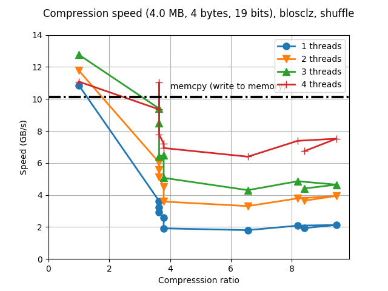
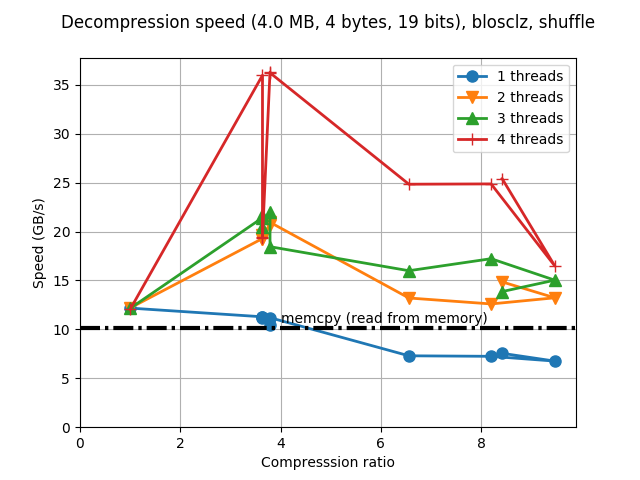
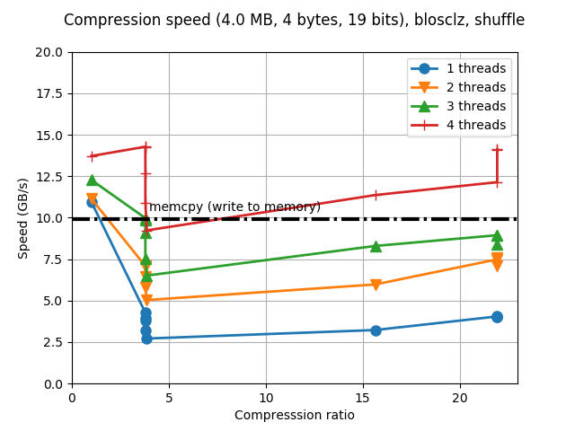
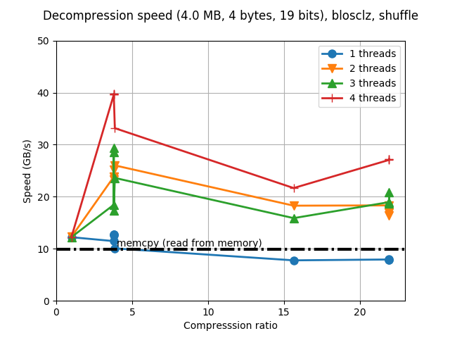
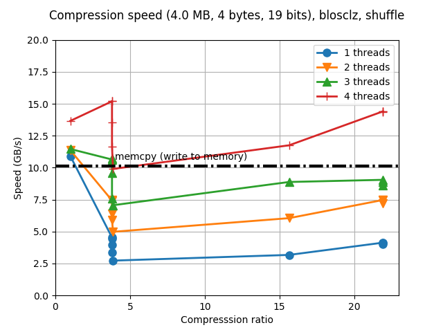

Fine Tuning the BloscLZ codec
Yesterday I was reading about the exciting new CPU architectures that both AMD and Intel are introducing and I was wondering how the improved architecture of the new cores and most specially, its caches, could apply to Blosc. It turns out that I have access to a server with a relatively modern CPU (Xeon E3-1245 v5 @ 3.50GHz, with 4 physical cores) and I decided to have a go at fine-tune the included BloscLZ codec (the one that I know the best) inside C-Blosc2. Of course, I already spent some time tuning BloscLZ, but that was some years ago and provided the fast pace at which CPUs are evolving I thought that this was excellent timing for another round of fine-tuning, most specially in preparation for users adopting the forthcoming RYZEN, Threadripper, EPYC and Skylake-SP architectures.
Frankly speaking, I was expecting to get very little improvements in this front, but the results have been unexpectedly good. Keep reading.
Where we come from
Just for reference, here it is the performance of the BloscLZ codec in my server before the new tuning work:
 |
 |
That is the typical synthetic benchmark in Blosc, but for the plotting function in the C-Blosc2 project, the actual size of each compressed buffer is shown (and not the size of the whole dataset, as in C-Blosc1). In this case, the dataset (256 MB) is split in chunks of 4 MB, and provided that our CPU has a LLC (Last Level Cache) of 8 MB, this is sort of an optimal size for achieving maximum performance (the buffers meant for Blosc usually do not exceed 4 MB for most of its common usages).
As can be seen, performance is quite good, although compression ratios left something to be desired. Furthermore, for the maximum compression level (9), the compression ratio has a regression with respect to the previous level (8). This is not too bad, and sometimes happens in any codec, but the nice thing would be to avoid it if possible.
The new BloscLZ after fine tuning
So, after a couple of hours playing with different parameters in BloscLZ and C-Blosc2, I started to realize that the new Intel CPU performed exceedingly well when asked to compress more, to the point that high compression settings were not performing that slow in comparision with low compression ones; rather the contrary: high compression settings were operating at almost the same speed than lower ones (which was a welcome surprise indeed). Hence I tried to be set quite more aggressive parameters in BloscLZ, while trying to keep the size of internal blocks in Blosc2 below 256 KB (the typical size of L2 caches in modern CPUs). This is the result:
 |
 |
So the compression ratios have increased quite a bit, specially for the larger compression levels (going from less than 10x to more than 20x for this benchmark). This is courtesy of the new, more agressive compression parameters. Strikingly enough, performance has also increased in general, but specially for these large compression levels. I am not completely certain on why this is the case, but probably this new CPU architecture is much better at out-of-order execution and prefetching larger blocks of data, which benefits compressing both faster even in large buffers; similarly, I am pretty sure that improvements in compiler technology (I am using a recent GCC 6.3.0 here) is pretty important for getting faster binary code. We can also see that when using 4 threads (i.e. using all the physical cores available in our CPU at hand), BloscLZ can compress faster than a memcpy() call for most of the cases, and most specially at large compression levels, as mentioned before. Oh, and we can see that we also got rid of the regression in the compression ratio for compression level 9, which is cool.
Regarding decompression speed, we can see that the new tuning gave general speed-ups of between 10% and 20%, with no significant slowdowns in any case. All in all, quite good results indeed!
Room for more improvements? Enter PGO.
To temporary end (optimization is a never ending task) this quest for speed, I am curious about the speed that we can buy by using the PGO (Profile Guided Optimization) capability that is present in most of the modern compilers. Here I am going to use the PGO of GCC in combination with our benchmark at hand so as to provide the profile for the compiler optimizer. Here are the results when PGO is applied to the new parametrization:
 |
|

So, while the speed improvement for compression is not significant (albeit a bit better), the big improvement comes in the decompression speed, where we see speeds almost reaching 50 GB/s and perhaps more interestingly, more than 35 GB/s for maximum compression level, and for first time in my life as Blosc developer, I can see the speed of decompressing with one single thread being faster than memcpy() for all the compression levels.
I wonder what the PGO technique can bring to other codecs in Blosc, but that is stuff for other blog post. At any rate, the reader is encouraged to try PGO on their own setups. I am pretty sure that she will be pleased to see nice speed improvements.
Appendix: Hardware and software used
For reference, here it is the configuration that I used for producing the plots in this blog entry.
CPU: Intel Xeon E3-1245 v5 @ 3.50GHz (4 physical cores with hyper-threading)
OS: Ubuntu 16.04
Compiler: GCC 6.3.0
C-Blosc2: 2.0.0a4.dev (2017-07-14)
BloscLZ: 1.0.6 (2017-07-14)
Comments
Comments powered by Disqus